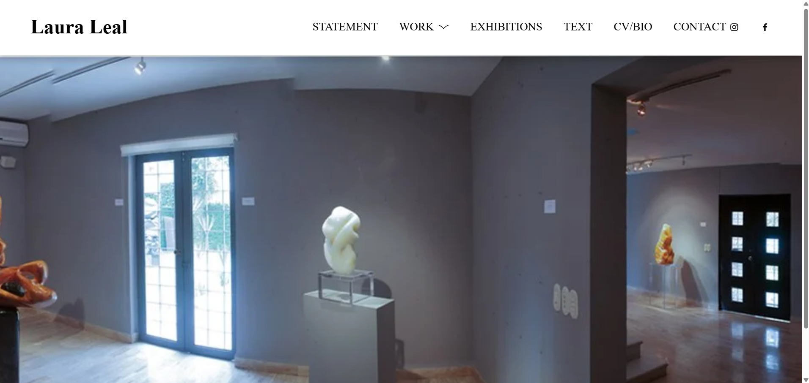
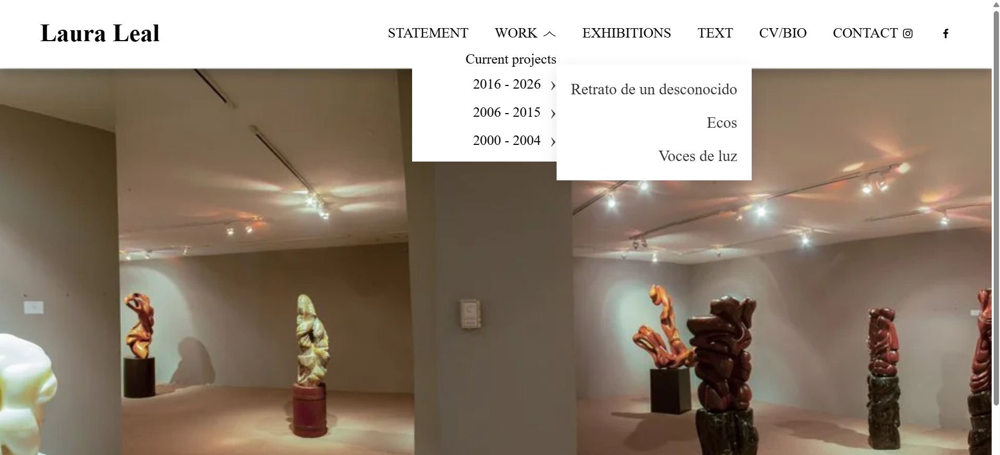
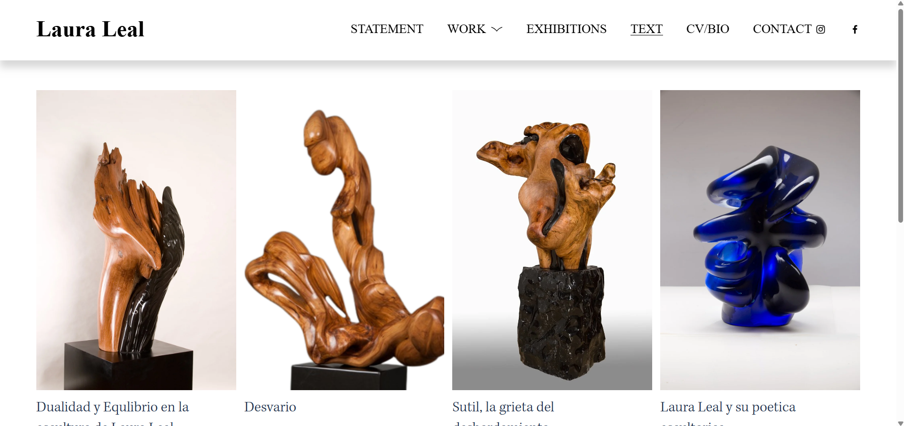
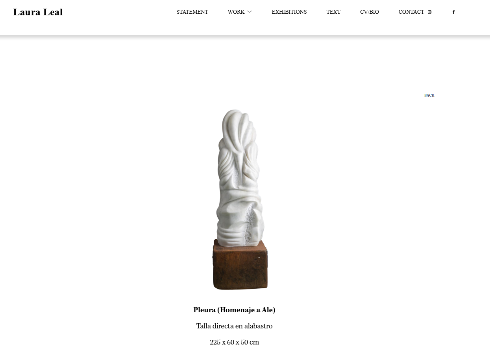
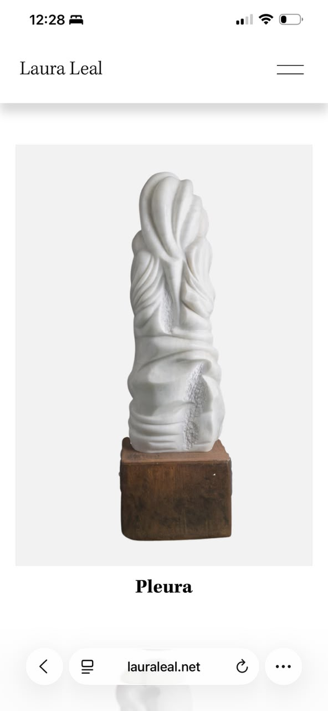
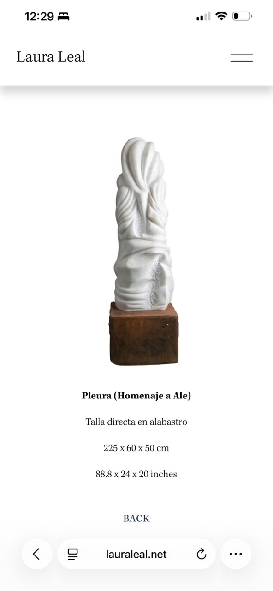
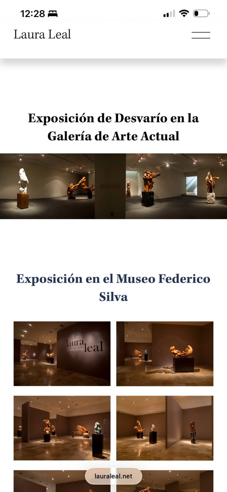

Diseño web · Squarespace · SEO
Laura Leal — Portafolio web
Trabajé sobre el portafolio digital existente de la escultora Laura Leal, reorganizando páginas, imágenes y textos, e implementando ajustes de navegación, presentación y estructura técnica en Squarespace.

Contexto
Laura Leal es una escultora mexicana. Su sitio funciona como archivo y portafolio digital de obras, exposiciones, textos e información profesional.
La obra y la identidad artística corresponden a Laura; las fotografías y el contenido artístico pertenecen a sus respectivos titulares. Mi participación se centró en organizar, implementar y optimizar su presentación digital sobre el sitio existente.
El reto
Organizar una cantidad amplia de series, proyectos e imágenes en un recorrido coherente. El trabajo requirió ajustar páginas existentes, integrar contenido, mantener consistencia entre secciones y resolver URLs y enlaces antiguos.
Las soluciones técnicas y de navegación se adaptaron a las preferencias visuales y decisiones curatoriales de la cliente, manteniendo su visión artística.
Trabajo realizado
Páginas y estructura
- Reorganización de páginas, proyectos y series en WORKS.
- Creación y ajuste de páginas de obras y subpáginas.
- Modificaciones del menú y configuración de navegación desplegable.
- Ajustes del Home, contacto y elementos del footer.
Contenido y presentación
- Carga, organización y redimensionamiento de imágenes.
- Reorganización de textos y statement.
- Ajustes de currículum, biografía y exhibiciones.
- Ajustes visuales con CSS y JavaScript cuando fue necesario.
SEO y estructura pública
- Revisión de URLs y enlaces antiguos.
- Configuración de redirecciones 301.
- Verificación y trabajo con Google Search Console.
- Organización del dominio y estructura pública del sitio.
Tecnologías utilizadas
Navegación y estructura
La sección WORK agrupa proyectos por períodos y permite acceder a series y subpáginas desde un menú desplegable. La jerarquía conecta obras, exposiciones, textos e información profesional.

Obras, textos y contexto
La organización de imágenes y textos permite recorrer el contenido artístico sin perder la relación entre cada pieza y su contexto. Se ajustaron las páginas y el contenido visual respetando las decisiones de presentación de la cliente.


Una página para cada obra
Las páginas individuales centran la atención en la pieza y reúnen su información en una presentación limpia. La captura muestra «Pleura (Homenaje a Ale)», con su técnica y dimensiones.
Mi trabajo incluyó crear y ajustar páginas de obras, organizar sus imágenes y textos y mantener una estructura consistente entre proyectos.
La obra y su ficha, en móvil
Las capturas reales de Pleura muestran dos lecturas complementarias: la imagen de la escultura y su información técnica. La ficha reúne título, técnica, dimensiones y navegación de retorno sin superponer esos datos a la obra.


Exposiciones en pantallas pequeñas
El portafolio también organiza exposiciones mediante títulos y galerías de imágenes. La vista móvil muestra la exposición de Desvarío en la Galería de Arte Actual y contenido del Museo Federico Silva.
Esta captura permite observar la adaptación del contenido editorial y visual a una columna, junto al acceso al menú móvil. Complementa el trabajo de organización de exhibiciones y presentación de imágenes.

SEO y mantenimiento técnico
Revisé URLs, configuré redirecciones 301 y corregí enlaces antiguos para mantener el acceso al contenido tras su reorganización. El trabajo también incluyó Google Search Console y ajustes relacionados con visibilidad e indexación.
Resultado
El sitio quedó organizado como un portafolio digital para presentar obras, series, exposiciones, textos, información profesional y contacto. La intervención reunió una cantidad amplia de contenido en una estructura más coherente y navegable, alineada con las necesidades y visión de la cliente.
El portafolio, en vivo
Explora el sitio de Laura Leal y su archivo de obras y proyectos.
Hablemos de tu proyecto
Si quieres conocer más sobre mi trabajo o conversar sobre una idea, puedes escribirme.